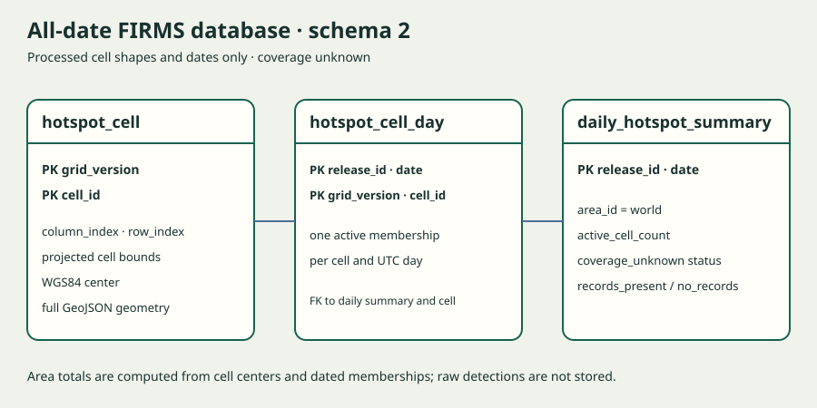

One checked database for the full input set.
The release at data/global-releases/firms-v2 contains all nine local CSVs: 86,160,406 valid rows, 20,816,093 distinct cell/day memberships, 164,845 cells, and 9,507 daily rows from 2000-11-01 to 2026-11-11. It stores processed data only.
| Table | Key | Purpose |
|---|---|---|
hotspot_cell | grid_version, cell_id | Cell index, bounds, WGS84 center, and full GeoJSON shape. |
hotspot_cell_day | release_id, date, grid_version, cell_id | One compact membership when a cell had one or more detections that UTC day. |
daily_hotspot_summary | release_id, date | Global active-cell count and input state for every day in the date range. |
V2 accepts Viet Nam and South America names. The backend includes cells whose centers are covered by the exact saved area polygon. It returns complete cell polygons as WGS84 GeoJSON; Leaflet sets its map CRS separately. A count of zero still has coverage_unknown.
Build another release with python scripts/preprocess_firms.py --input /path/to/csv-folder --output-dir data/global-releases/new-release. Verify it with python scripts/check_results.py --schema2-release-dir data/global-releases/new-release.
Prepare first. Query later.
Offline preparation reads small batches, checks each source, assigns each detection by its center, discards the row, and saves daily area counts in a fixed release. A map request reads that dataset; it does not call FIRMS.
One release, one grid
The release fixes w in km, projection, origin, cell IDs, edge rules, and boundary catalog version. A width change creates a new grid version and release.
Three different objects
Detection: one source point. Cell: one fixed grid unit. Hotspot cell: a cell with selected detections on one UTC day. None is a count of separate wildfires.
Understand the source columns.
The pilot uses the two downloaded NRT CSV files selected in the processed settings. Product headers can differ across MODIS, VIIRS, standard, and export files; they are not one universal CSV schema.
How fields are used
The selected CSV files remain in the user-provided local input folder and are not copied into the processed dataset. Preprocessing uses location, UTC date/time, and source/platform identity to build cells. It does not store raw rows, FRP, or brightness values.
| MODIS column | VIIRS column | Meaning / rule | Processed-only treatment |
|---|---|---|---|
| latitude | latitude | Pixel center; degrees north. | Read transiently; no raw field stored. |
| longitude | longitude | Pixel center; degrees east. | Read transiently; no raw field stored. |
| brightness | bright_ti4 | Temperature in K: MODIS 21/22 or VIIRS I4. Different bands. | Read transiently; no raw field stored. |
| scan | scan | Pixel width along scan, in km. | Read transiently; no raw field stored. |
| track | track | Pixel width along track, in km. | Read transiently; no raw field stored. |
| acq_date | acq_date | Observation date. Combine with UTC time. | Read transiently; no raw field stored. |
| acq_time | acq_time | UTC HHMM. Pad 3 to 0003 before parsing. | Read transiently; no raw field stored. |
| satellite | satellite | Satellite label. Resolve with the checked product mapping. | Read transiently; no raw field stored. |
| instrument | instrument | Product and satellite instrument label; validate against the selected source. | Read transiently; no raw field stored. |
| confidence | confidence | MODIS: 0–100. VIIRS: l / n / h. Keep as source text. | Read transiently; no raw field stored. |
| version | version | Collection and processing mode. Keep as text for each row. | Read transiently; no raw field stored. |
| bright_t31 | bright_ti5 | Temperature in K: MODIS 31 or VIIRS I5. Different bands. | Read transiently; no raw field stored. |
| frp | frp | Raw fire radiative power in MW. Keep unchanged. | Read transiently; no raw field stored. |
| daynight | daynight | D = day; N = night. Retain source text and quality tag. | Read transiently; no raw field stored. |
| type | — | Optional source type; present in the saved MODIS SP header. | Read transiently; no raw field stored. |
The selected files were checked row by row for consistent collection bases and processing-version suffixes. The release records source version labels as metadata; raw version fields and rows are not stored.
Evidence: local field notes, NASA MODIS fields, and NASA VIIRS fields. No new FIRMS API request was made for this page.
Two small local tables.
Keep full cell shapes once per grid version. Keep each prepared area's daily count and unique cell IDs. No raw detection or cell-link table is needed.

PK = primary key. The dashed lookup uses JSON IDs and the release grid version; it is checked during preprocessing, not a SQL foreign key.
Small manifest/validation files record source IDs, versions, full hashes, filters, grid settings, and checks. The versioned boundary catalog stays local. These metadata files contain no raw rows or per-detection ID lists.
Two simple read paths.
Website → API → daily_hotspot_summary → hotspot_cell shapes → GeoJSON features + daily hotspot count → OpenLayers map and count display.
Time-series chart
API → daily_hotspot_summary.
Read saved counts by release, area, and UTC date. A cell seen by Aqua and Suomi-NPP counts once. Aqua seeing A/B and Suomi-NPP seeing B/C gives 3 hotspots.
OpenLayers map
API → daily_hotspot_summary + hotspot_cell.
Read the area/day hotspot cell IDs, load their shapes with the release grid version, then clip only the drawn shape. Return GeoJSON features and the daily count. The basemap stays below the hotspot layer. Raw and platform details are outside this processed release; a future feature would need the original local source files.
The release supplies grid settings and validates the selection. Named areas use one local catalog. For a bbox inside a prepared area, filter that area’s saved cell IDs by cell center and count the retained cells. Reject selections without a containing prepared area; do not reuse an unfiltered area total. The separate cell route is implemented at POST /v1/hotspots/cells/query; the point route remains for legacy releases.
What is stored for each day?
release_id, area_id, date, active_cell_count, hotspot_cell_ids, status. Save every day in the declared period. The cell IDs are sorted and unique, and the count equals their list length. Empty prepared day: [] and 0; missing inputs: null and null. Partial lists stay marked partial. Count before map paging. Measure list size before expanding the MVP. A different platform filter must be calculated separately, not read from an all-platform saved total.
Missing is different from zero
A prepared input day can have a count of zero with unknown coverage. Mark that status explicitly. A missing input day has a null count and missing status. Partial input counts stay partial. Zero detections do not prove no fire.
What remains for later?
Validated daily cell FRP still needs pass and quality evidence and a reviewed storage choice. Raw FRP remains in the original local CSVs; it is not copied or stored in the processed database. The old cell-level analysis_daily is not copied into this MVP database. Full-cell metrics still need data beyond nation borders where a cell crosses them.
A small path to TimescaleDB.
- Keep SQLite for the MVP. Measure size and query speed.
- When needed, move to regular PostgreSQL tables first. Compare source IDs, counts, UTC dates, nulls, and API results on the same data.
- Consider
daily_hotspot_summaryas the first hypertable. Its primary key includes the date. If partitioning by a new UTCday_start TIMESTAMPTZ, migrate the date column and key together. - Keep
hotspot_cellas a regular geometry table; it has no observation time to partition.
Unique keys on a hypertable must include its partition columns. See official key rules. No server, retention jobs, or continuous summaries are needed now. Keep published releases within budget.
The local pilot database and processed-cell OpenAPI route are implemented and verified. The legacy database is unchanged; visible OpenLayers review is pending.
Source of truth and evidence
- Development spec: §10.6 schema draft and §11.2 migration rules.
- Shared terms and saved CSV evidence.
- NASA MODIS fields and NASA VIIRS fields: source field meanings.
- Tiger Data unique-key rules: time partition constraints, checked 14 November 2026.
- API guide and current OpenAPI, including the processed cell route.
Quick check: which data stay local?
A. Every original CSV row.
B. All brightness bands.
C. Processed cell shapes and daily summaries.
D. Satellite image granules.
Show answer
C. Raw rows are read transiently from the selected local CSVs.